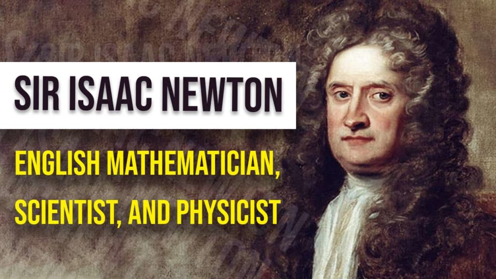

I can calculate the motion of heavenly bodies, but not the madness of people.
The most important philosopher of all-time. Newton was plagued by the loss of family and place in family life. Newton had no heirs, few friends and many rivals but one blasphemous ambition: The pursuit of knowledge and the contemplation of "Doubt". The skew of Sir Newton was knowledge of the why of and where for and by the account of many historians was a contradiction of a man. Pious yet pagan; Astronomer yet astrologic; Mathmatician yet Naturalist and finally Alchemist yet Scientific. He was a religious doubtful philosopher who questioned God and the observable world.